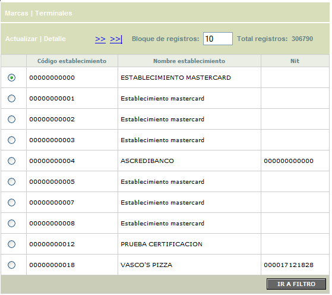
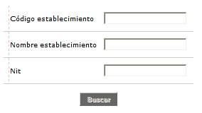
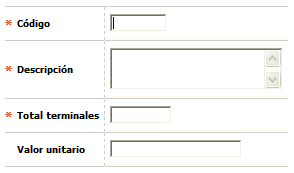
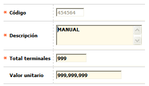
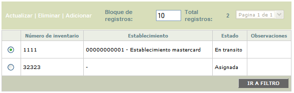
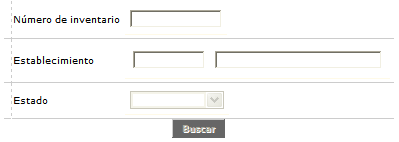
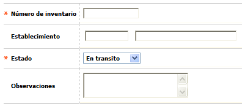
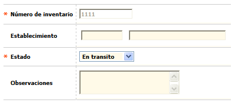
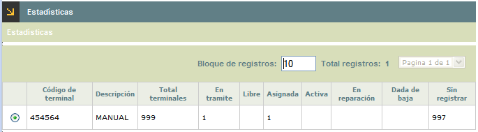
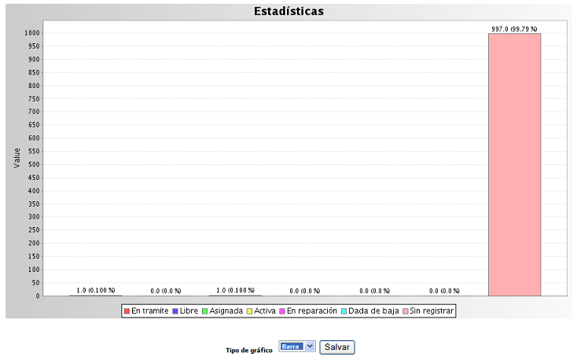

Estados y Bloqueos por establecimientos |
Mediante este formulario se definen las diferentes terminales que se utilizarán los distintos establecimientos.
El formulario contiene las opciones Actualizar, Eliminar, Adicionar y Detalle. Adicionalmente, cuenta con un filtro de búsqueda y los enlaces de Inventario de terminal y Estad�sticas.

Filtro: Se pueden realizar consultas a través de las siguientes opciones:

Código |
Campo numérico de máximo 6 dígitos, en el que se registra el código asignado a cada una de las terminales. |
Descripción |
Campo alfanumérico de 40 caracteres, en el cual se registra el nombre de la terminal o una pequeña descripción de ésta. |
Adicionar: Si el usuario invoca la opción Adicionar se despliega un nuevo formulario.

Código |
Campo numérico de máximo 6 dígitos, en el que se registra el código asignado a cada una de las terminales. |
Descripción |
Campo alfanumérico de 40 caracteres, en el cual se registra el nombre de la terminal o una pequeña descripción de ésta. |
Total terminales |
Campo numérico de máximo 6 dígitos, en el que se registra este concepto. |
Valor unitario |
Para este campo el sistema admite cualquier dato numérico de máximo 14 dígitos, 12 enteros y dos decimales. |
Actualizar: Si el usuario invoca la opción Actualizar se despliega un nuevo formulario en el cual los únicos campos modificables son: Descripción, Total terminales, y Valor unitario.

A través de este formulario, el sistema permite registrar la identificación y el estado de cada una de las terminales, así como también los comentario correspondientes en caso de ser necesarios.
El formulario contiene las opciones Actualizar, Eliminar, Adicionar y Detalle. Adicionalmente, cuenta con un filtro de búsqueda y un enlace en la parte superior izquierda para ir al men� anterior.

Filtro: Se pueden realizar consultas a través de las siguientes opciones:

Número de inventario |
Campo alfanumérico de 12 caracteres, en el cual se registra el código asignado a cada una de las terminales del inventario. |
Establecimiento |
Campo que permite el ingreso del código del establecimiento, sólo se habillita si en el campo Estado se encuentra seleccionada la opción Asignada o Activada. |
Estado |
Lista de valores que permite seleccionar una de las siguientes opciones: En tránsito, Libre, Asignada, Activada, En reparación, y Dada de baja. |
Adicionar: Si el usuario invoca la opción Adicionar se despliega un nuevo formulario.

Número de inventario |
Campo alfanumérico de 12 caracteres, en el cual se registra el código asignado a cada una de las terminales del inventario. |
Establecimiento |
Campo que permite el ingreso del código del establecimiento, sólo se habillita si en el campo Estado se encuentra seleccionada la opción Asignada o Activada. |
Estado |
Lista de valores que permite seleccionar una de las siguientes opciones: En tránsito, Libre, Asignada, Activada, En reparación, y Dada de baja. |
Observaciones |
Campo alfanumérico que permite ingresar una breve descripción de cada uno de los elementos relacionados como inventario. |
Actualizar: Si el usuario invoca la opción Actualizar se despliega un nuevo formulario en el cual los únicos campos modificables son: Establecimiento, Estado y Observaciones.

A través de este formulario, el sistema permite consultar los registros de estadísticas por cada Terminal, a través de dos tipos de graficos según seleccione el usuario entre Barras o Pastel.
El formulario contiene la opción Estadísticas y un enlace en la parte superior izquierda para ir al men� anterior.

Estadísticas: Si el usuario invoca esta opción se despliega un nuevo formulario en el cual se muestran las estadísticas correspondientes a la terminal seleccionada, con un único campo llamado Tipo de gráfico, a través del cual se podra seleccionar cómo visualizar estos datos.
